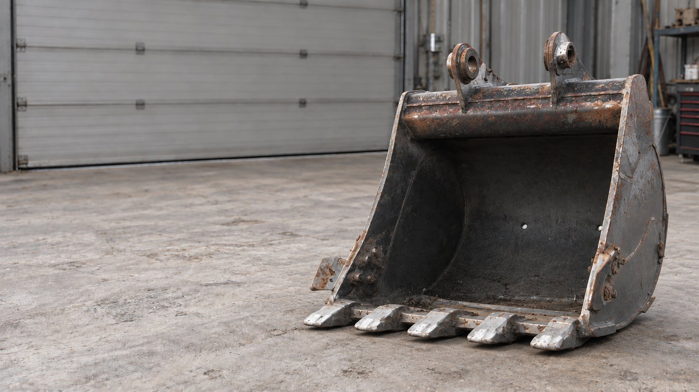
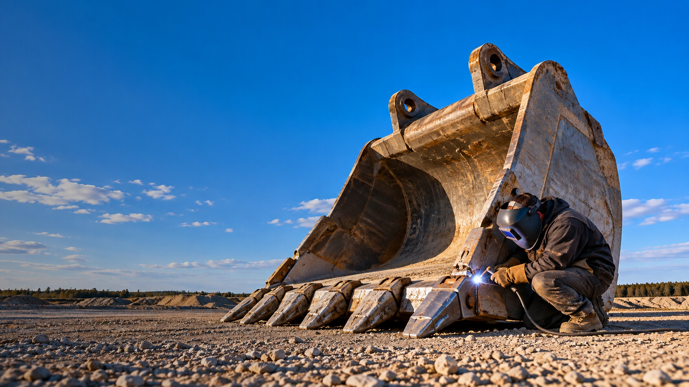

01 / 02Ковши
Ковши
экскаваторов
Замена изношенных элементов, восстановление геометрии, ремонт проушин и посадочных отверстий, усиление зон повышенного износа
Подробнее→
Свой цех 1000 м² в Кракове. Выезд по всей Польше 24/7
Мы не продаём новые ковши. Мы возвращаем старым ресурс: геометрию, прочность и режущую кромку. Дешевле замены и быстрее поставки.

Замена изношенных элементов, восстановление геометрии, ремонт проушин и посадочных отверстий, усиление зон повышенного износа
Подробнее→
Ремонт днища и боковых стенок, замена режущей кромки, восстановление креплений и усиление конструкции для работы под высокой нагрузкой
Подробнее→


Узнаём актуальную стоимость нового и б/у ковша под вашу технику. Сравниваем варианты на рынке, чтобы понять реальную стоимость замены. Эта цена становится точкой отсчёта: ремонт должен быть экономически оправдан.
Проверяем состояние металла, геометрию, режущую кромку, крепления и другие элементы. Определяем, что действительно требует восстановления, а что ещё имеет нормальный ресурс. Не добавляем в расчёт работы, которые вам не нужны.
Считаем необходимый металл, расходные материалы и объём работ. Формируем понятную стоимость восстановления до начала ремонта. Вы заранее знаете бюджет и можете сравнить его со стоимостью замены ковша.
Показываем две цифры: сколько стоит восстановить ваш ковш и сколько обойдётся его замена. Если ремонт экономически невыгоден, скажем об этом прямо. Вы выбираете вариант, который выгоднее для вашей техники и бизнеса.

Свяжемся в течение часа, запросим фото ковша и данные техники и подготовим точный расчёт стоимости ремонта